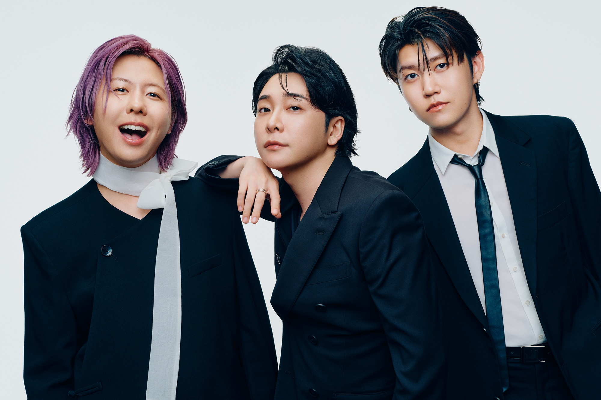
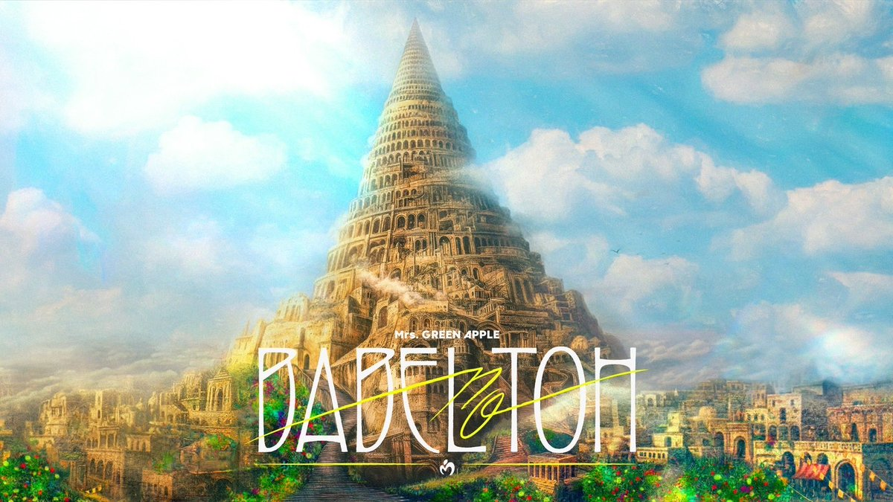
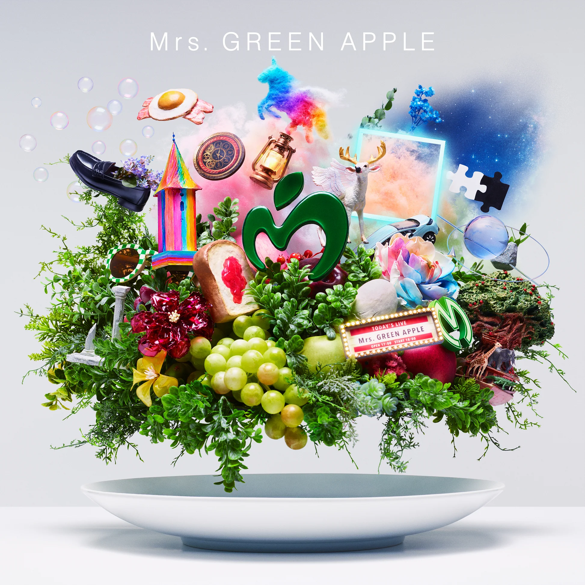

好きな音楽



Mrs.GreenApple

圧倒的なハイトーンボイスとキャッチーなメロディが特徴の、日本を代表する3人組ロックバンドです。
「ケセラセラ」や「ライラック」など数多くのヒット曲を生み出し、幅広い層から熱狂的な支持を得ています。
2022年の活動再開（フェーズ2）以降は、音楽だけでなくその華やかなビジュアルや世界観でもファンを魅了し続けています。
- 好きな曲： ナハトムジーク
- 理由： 静寂から始まる美しいバラードで、孤独や痛みを受け入れながらも前を向く強さを、大森元貴の圧倒的な表現力で歌い上げているところです。
おすすめの曲
- リリース日： 2026/1/12
- 【聞いてみる】
- リリース日： 2025/5/2
- 【聞いてみる】
- リリース日： 2024/01/17
- 【聞いてみる】
- リリース日： 2023/07/05
- 【聞いてみる】
lulu
バンドのフェーズ3始動を告げる第1弾楽曲であり、アニメ『葬送のフリーレン』第2期オープニングテーマです。
輪廻転生をテーマに、高密度のサウンドと冷徹かつ温かい視点で、命のつながりや時の残酷さを描いた壮大な物語となっています
天国

Mrs. GREEN APPLEの「天国」は、2025年4月公開の映画『#真相をお話しします』の主題歌として書き下ろされた楽曲です。
大森元貴の壮大な愛や人間の絆をテーマにした歌詞と、7回以上の転調を重ねる複雑な構成が特徴的です。
ナハトムジーク

2024年1月にリリースされた映画『サイレントラブ』の主題歌です。
不器用ながら誰かを強く想う愛と、人生の不完全さを肯定する温かく美しいメッセージが込められたバラード曲で、ストリーミング累計1億回再生を突破するなど多くの共感を集めています。
ANTENNA

自身の「感受性（アンテナ）」を大切に生きるという強いメッセージが込められた楽曲です。
バレーボールの応援ソングでもあり、人生の複雑な感情を受け入れながら前を向く、背中を押す歌詞とエネルギーあふれるサウンドが特徴です。